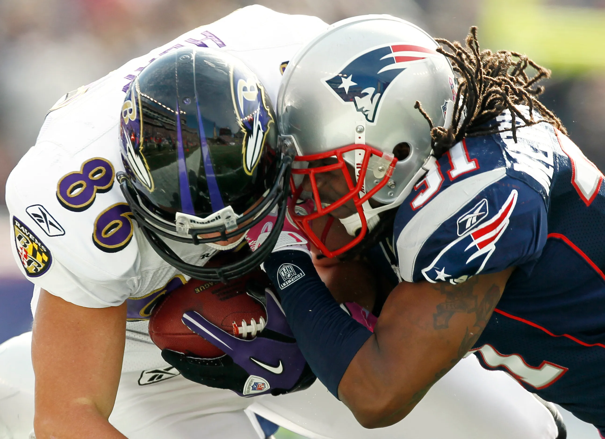
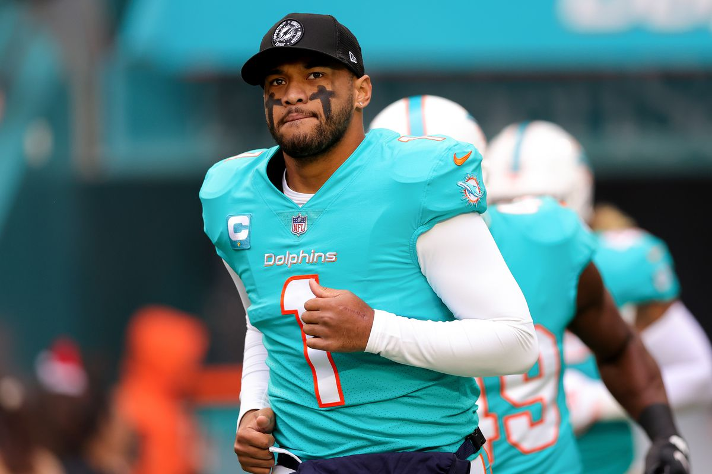

Don't Let it Go to Your Head ... Literally
By Grace Qian | November 22, 2022

Concussions are the most common sports injury. According to University of Michigan Health, about 3.8 million concussions occur each year in the U.S. from sports-related and recreational injuries. Additionally, 20% of high school players experience a concussion in a given season.
But what exactly is a concussion?
The best way to explain a concussion is to imagine your head as a snow globe. Now imagine violently shaking the snow globe so that the snow inside is disrupted and swirls all around. Analogous to the snow, your brain will take time for the contents to settle down from the impact force to the head.
Concussions in athletes are extremely common – these brain injuries can occur due to a blow, jolt, or bump to the head or body, as well as if the head or body is shaken violently. Concussions affect cognitive functions, such as memorizing vocab for English class, focusing during work, and even remembering simple daily tasks. Many athletes can also develop post-concussion syndrome (PCD), which is when concussion symptoms last beyond the expected recovery period for the initial sustained injury.
In this article, I will discuss the various statistics involved with concussions, as well as various athletes who have endured concussions.
Which sports have the most concussions?
he sports with the most concussions are contact sports - sports that emphasize or require physical contact between players.
The bar chart below shows concussion rates – this indicates the number of sports concussions taking place per 100,000 athletic exposures (AE). An athletic exposure is defined as one athlete participating in one organized high school athletic practice or competition, regardless of the amount of time played.

Looking at the bar chart, it is apparent that football has the most concussions. This is not a surprise, considering that a pro football player will receive an estimated 900 to 1,500 blows to the head per season. The average pro football player Hockey, soccer, lacrosse, and basketball are also high up on the list (all contact sports).
Some important mentions that are not on this bar graph are rugby, boxing, and taekwondo. Rugby is actually ranked even higher than football, making it the sport with the largest number of concussions. Hand-to-hand combat sports such as boxing, taekwondo, and other martial arts also have a high concussion rate (due to the high amount of kicks and blows delivered to the body).
Gender Disparities

Interestingly, there is actually evidence that female athletes are more prone to concussion than males. Female athletes are not only more susceptible to concussion than are males, but also sustain more-severe concussions. Why is this?
- Biological differences in neck musculature between males and females are the most common explanation. Young women have less developed neck muscles than their male counterparts – this means that the head moves more when there is impact. Furthermore, gender differences like hormones and cerebral blood flow are also evidenced to result in worse concussions for women.
- Another possibility is that since women’s sports are considered less risky, athletic programs provide less sideline care for girls’ sports than for the boys. Without the expertise of a medical professional during the time of concussion, the girls will take longer to even notice that they have sustained a concussion.
- Another difference is that in girls’ sports, contact is generally illegal. Because of this, girls who play high-contact sports are not taught how to take a hit to minimize the impact. In contrast, in boys’ sports (football, ice hockey, lacrosse), coaches teach boys how to learn to take and avoid hits while tackling and playing.

Concussions versus Other Types of Sports Injuries
While most children and teens with a concussion feel better within a couple of weeks, some will have symptoms for months or longer. Because of this, concussion protocol is essential to follow. Approximately 80 percent of concussions resolve over seven to 14 days. However, concussions often have long lasting effects – in some cases, concussions can cause permanent brain damage, paralysis, or even death.
One thing that sets concussions and TBIs (traumatic brain injury) apart from other injuries is their effect on not just the physical but also the mental and emotional health – if the brain is damaged in any way, this can result in changed emotional well-being, as well as difficulties concentrating, thinking, sleeping, and even talking.
Case Studies of 5 Different Athletes who got Concussions
1. Sean Morey
Sport: Football (Seattle Seahawks)

In his 2009 season, wide receiver Sean Morey suffered from four concussions during a single game. Due to his post-concussion syndrome, doctors advised Sean Morey to retire from the NFL. Now, Morey still struggles with PCD, resulting in explosive anger, migraines, and memory and focus issues. As founder of the NFL Players Association’s committee on traumatic brain injury, Morey not only encourages others like him to get involved but has vowed to donate his brain for research after his death.
2. Kat Merchant
Sport: Rugby (England women’s national rugby union team)

Star rugby player Kat Merchant retired after enduring 11 concussions in 14 seasons. Merchant reported on BBC Radio 5 Live, “I have a lower cognitive capacity…I can’t do a hundred things at once without getting a headache or getting flustered or forgetting my words.” Like Morey, she is also an advocate for traumatic brain injury in athletes. She is vocal about more research into how brain injury impacts women athletes and their susceptibility to concussions over their male counterparts.
3. Briana Scurry
Sport: Soccer (U.S. women’s national soccer team)

Brianna Scurry was the former starting goalkeeper for the U.S. women’s national soccer team. Prior to her professional career, she collided with one of Philadelphia’s forwards in a game against Philadelphia Independence. The result was a concussion that Scurry didn’t even know about until symptoms showed up and persisted.
After, Scurry was diagnosed with post-concussion syndrome – suffering from permanent nerve damage and headaches. She is now an advocate for soccer safety, such as the mandatory use of headgear in the sport as well as the 2015 decision to ban heading the ball in youth soccer.
4. Adam Deadmarsh
Sport: Ice hockey (Los Angeles Kings)

Adam Deadmarsh was a Canadian-born American former professional ice hockey player. He played in the NHL with the Quebec Nordiques, Colorado Avalanche, and the Los Angeles Kings. Deadmarsh sustained multiple concussions – the first concussion was a result of a fight with Ed Jovanovski in November 2000, but it was an accidental kick to the head by a fellow Kings’ teammate that resulted in his second concussion and ultimately the end of his NHL career. Deadmarsh retired a couple years later, but still sustains post-concussion symptoms.
5. Ryan Miller
Sport: Football (Cleveland Browns)

Ryan Miller was an offensive guard for the Cleveland Browns (considered one of the best offensive guards for his class), but he sustained a head injury during blocking drills at the Browns' indoor facility in 2015. He was a rookie in 8 games for the Dallas Cowboys. Eventually he was cut by the Cowboys, despite fighting his symptoms. Miller was diagnosed with PCD, as he faced memory loss, seizures, and migraines. Like Sean Morey, he has also vowed to donate his brain for research after his death. Miller and Morey are both examples of football players who are at high risk of concussions due to the high amount of contact as well as the severity of the impact of the blows the players sustain.
Current Developments
Concussions are bound to happen in sport, and especially in high-contact sports. However, how we respond to these injuries makes a big difference for athletes at all levels.
The NFL especially has implemented a ton of new rules over the past few years, such as increasing penalties/suspensions for dangerous hits, improving concussion protocols. However, just this year there was an instance where poor concussion protocol was displayed: Miami Dolphins quarterback Tua Tagovailoa suffered a hit to the head and the team let him play in a game 4 days later (where he received another hit to the head). NFL Chief Medical Officer Dr. Allen Sills said that it is “extremely unlikely” a player in a situation like Tagovailoa’s would be cleared with the updated protocols. In fact, the median time for clearance is a nine-day window.
Looking at the concussion stats, it is evident that developing and implementing evidence-informed concussion protocols for sports and schools is crucial for staying safe whilst having fun.